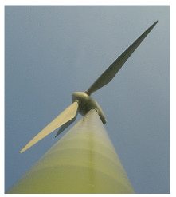
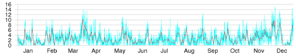
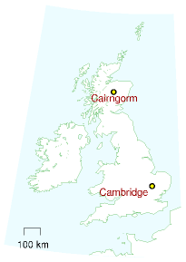
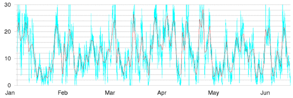
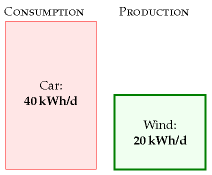
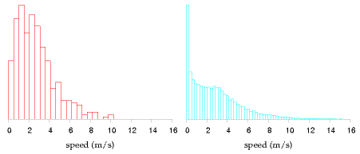

4 Wind

The UK has the best wind resources in Europe.
Sustainable Development Commission
Wind farms will devastate the countryside pointlessly.
James Lovelock
How much wind power could we plausibly generate?
We can make an estimate of the potential of on-shore (land-based) wind in the United Kingdom by multiplying the average power per unit land area of a wind farm by the area per person in the UK:
power per person = wind power per unit area × area per person.
Chapter B explains how to estimate the power per unit area of a wind farm in the UK. If the typical windspeed is 6 m/s (13 miles per hour, or 22 km/h), the power per unit area of wind farm is about 2 W/m2.

Figure 4.1. Cambridge mean wind speed in metres per second, daily (red line), and half-hourly (blue line) during 2006. See also figure 4.6. 1

This figure of 6 m/s is probably an over-estimate for many locations in Britain. For example, figure 4.1 shows daily average windspeeds in Cambridge during 2006. The daily average speed reached 6 m/s on only about 30 days of the year – see figure 4.6 for a histogram. But some spots do have windspeeds above 6 m/s – for example, the summit of Cairngorm in Scotland (figure 4.2).
Plugging in the British population density: 250 people per square kilometre, or 4000 square metres per person, we find that wind power could generate
2 W/m2 ×4000 m2/person = 8000 W per person,
if wind turbines were packed across the whole country, and assuming 2 W/m2 is the correct power per unit area. Converting to our favourite power units, that’s 200 kWh/d per person.

Figure 4.2. Cairngorm mean wind speed in metres per second, during six months of 2006.

Figure 4.3. Chapter 4’s conclusion: the maximum plausible production from on-shore windmills in the United Kingdom is 20 kWh per day per person.
Let’s be realistic. What fraction of the country can we really imagine covering with windmills? Maybe 10%? Then we conclude: if we covered the windiest 10% of the country with windmills (delivering 2 W/m2), we would be able to generate 20 kWh/d per person, which is half of the power used by driving an average fossil-fuel car 50 km per day.
Britain’s onshore wind energy resource may be “huge,” but it’s evidently not as huge as our huge consumption. We’ll come to offshore wind later.
I should emphasize how generous an assumption I’m making. Let’s compare this estimate of British wind potential with current installed wind power worldwide. The windmills that would be required to provide the UK with 20 kWh/d per person amount to 50 times the entire wind hardware of Denmark; 7 times all the wind farms of Germany; and double the entire fleet of all wind turbines in the world. 2
Please don’t misunderstand me. Am I saying that we shouldn’t bother building wind farms? Not at all. I’m simply trying to convey a helpful fact, namely that if we want wind power to truly make a difference, the wind farms must cover a very large area.
This conclusion – that the maximum contribution of onshore wind, albeit “huge,” is much less than our consumption – is important, so let’s check the key figure, the assumed power per unit area of wind farm (2 W/m2), against a real UK wind farm.
Power per unit area
wind farm (speed 6 m/s)
2 W/m2
Table 4.4. Facts worth remembering: wind farms.
| Population density of Britain |
|---|
| 250 per km2 ↔︎ 4000m2 per person |
Table 4.5. Facts worth remembering: population density. See chapter J for more population densities.
The Whitelee wind farm being built near Glasgow in Scotland has 140 turbines with a combined peak capacity of 322 MW in an area of 55 km2. That’s 6 W/m2, peak. The average power produced is smaller because the turbines don’t run at peak output all the time. The ratio of the average power to the peak power is called the “load factor” or “capacity factor,” and it varies from site to site, and with the choice of hardware plopped on the site; a typical factor for a good site with modern turbines is 30%. If we assume Whitelee has a load factor of 33% then the average power production per unit land area is 2 W/m2 – exactly the same as the power density we assumed above.
The turbines got bigger. The answer did not.
A section added in the 2026 revision. Britain has moved offshore and upward since this chapter was written, and the scale of the change invites the assumption that the arithmetic above must be obsolete. It is not, and the reason is worth following.
MacKay’s typical machine was a 1 MW turbine with a 54-metre rotor. Dogger Bank, off the Yorkshire coast, is being built with GE Haliade-X units of 13 to 14.7 MW — a 220-metre rotor and a tip height of 260 metres, taller than any building in Britain outside London. Thirteen times the capacity of his reference turbine. Each one produces about 70 GWh a year.
Two things improved enormously and one did not.
Capacity factor improved. This chapter assumes a load factor of 33%. Dogger Bank’s site has been running above 55%, and the turbine is rated for 60–64% in those conditions. Offshore wind at 130 kilometres from land is a different resource from a hill in Scotland, and a machine reaching 260 metres samples a wind that a 1 MW turbine never touched.
Power per unit area did not improve — it fell. Dogger Bank A puts 1235 MW into 515 km2, Dogger Bank B the same into 599 km2, and neighbouring Sofia 1400 MW into 593 km2. Together that is 3870 MW in 1707 km2, or 2.3 W/m2 of peak capacity. At the 55% capacity factor actually achieved, the average is about 1.3 W/m2 — below the 2 W/m2 this chapter assumes for onshore wind, despite far better wind.
Chapter B explains why, and predicted it: power per unit area does not depend on turbine size, because spacing scales with diameter. What has changed is the spacing itself. This chapter assumes turbines 5 diameters apart; Dogger Bank spaces them about 10.6 diameters apart, and density falls with the square of that.
So the central claim of this chapter survives intact. The constraint on wind is area, and bigger turbines have not relaxed it. What Britain gained by going offshore is not a denser resource but a larger and less contested one — sea instead of land, and nobody’s view of it. The 2 W/m2 here remains the right order of magnitude, and for offshore it is if anything generous.
Will the wind still be there?
There is a worry that would undo this chapter quietly if it were true: global stilling, the observed slowing of surface winds since the late twentieth century. Because power goes as the cube of wind speed, even a small decline compounds — one study found a 5.5% per decade fall in wind speed accompanied by a 24.5% per decade fall in power. Chapter B examines how much of the measured decline survives being sampled properly. Two recent results bear on whether Britain should discount its wind resource for it, and both say no, for different reasons.
The first is that the climate signal is small. Giddings and colleagues modelled UK offshore generation to 2050 across an ensemble of climate projections and found the mean annual capacity factor falling by about 2.3% — a summer decline of 3.6% against a winter one of 1.5%.3 They attribute the summer weakening to multi-decadal variability rather than to stilling, and note that year-to-year climate variability is large compared with the whole projected twenty-first-century climate effect. A resource that varies more between two consecutive years than it is expected to shift in thirty is not a resource being taken away.
The second is more useful, because it identifies a lever. The same study compared three ways of distributing 140 GW of offshore capacity by 2050: concentrated on the east coast as now, following the Crown Estate’s proposals, or spread evenly across all sixteen UK shipping zones. Spreading it did not reduce mean generation at all, and it transformed the worst hours: minimum daily generation rose 27.9%, day-to-day variability fell 15.5%, extreme hourly ramps fell 33.5%, and the hours per year spent below 5% of capacity fell by 87%.
That last number deserves its own sentence. The single most quoted objection to wind — that sometimes it simply stops — is reduced roughly eightfold not by building storage or by burning gas, but by not putting all the turbines in the same weather. Capacity factor between zones correlates inversely with distance, so dispersal buys smoothing for free. It is the same insight as chapter 26’s, arrived at geographically rather than through storage.
For this chapter’s arithmetic that means the 2 W/m2 and the wind speed behind it can stand. What changes is the advice that follows from them: the binding question for British wind is no longer how much area is available, nor whether the wind is dying, but how correlated the chosen sites are with each other.
What the wind now earns
There is a second thing this chapter’s method cannot see, and it has become the binding constraint in practice. MacKay counts kilowatt-hours; the market pays for kilowatt-hours at the moment they arrive, and wind arrives when other wind does.
In Great Britain in 2025, against a time-weighted average market price of £79.9/MWh, wind captured £72.0 and solar £65.9 — value factors of 0.90 and 0.82. Gas, which can choose its hours, captured £94.8, a factor of 1.19.4 Every gigawatt of wind added lowers the price in precisely the hours that all the other wind is generating, so the resource this chapter sizes in W/m2 is worth progressively less per unit as it grows. That is a different limit from the one MacKay identified, it binds long before the land runs out, and chapter 28a is about it.

Figure 4.6. Histogram of Cambridge average wind speed in metres per second: daily averages (left), and half-hourly averages (right).
Queries
Wind turbines are getting bigger all the time. Do bigger wind turbines change this chapter’s answer?
Chapter B explains. Bigger wind turbines deliver financial economies of scale, but they don’t greatly increase the total power per unit land area, because bigger windmills have to be spaced further apart. A wind farm that’s twice as tall will deliver roughly 30% more power.
Answered again in the 2026 revision, because half of this has held and half has reversed.
The physical half held exactly, and the section above sets out the evidence: turbines went from 1 MW to nearly 15 MW, and the power per unit area did not rise. If anything it fell, because the spacing widened from the 5 diameters assumed in chapter B to about 10.6 at Dogger Bank.
The financial half — “bigger wind turbines deliver financial economies of scale” — was the reasonable expectation in 2008 and it stopped being true around 2021. Britain runs an auction that measures this cleanly, because the same contract is bid in the same 2012 pounds each round:
| Allocation Round | Offshore wind strike price (2012 £/MWh) | Capacity secured |
|---|---|---|
| AR4, July 2022 | 37.35 | ~7 GW |
| AR5, September 2023 | no bids | 0 |
| AR6, September 2024 | 58.87 | 3.4 GW |
Between AR4 and AR6 the price Britain had to offer for offshore wind rose by 58% in real terms in two years, with an auction in between that attracted no offshore bids at all because the administrative price was set too low to build at. Over precisely that period the turbines being installed got substantially bigger. So the economies of scale were real and were swamped: steel, copper, cables, vessels and above all the cost of capital rose faster than the engineering could compensate.
The AR6 price of £58.87 in 2012 money is about £82/MWh in today’s money, against a GB market price averaging £80/MWh in 2025 — which is to say that new offshore wind now needs roughly the market price to proceed, where in 2022 it was contracting well below it. Chapter 28a takes up what that means, and adds the second half of the squeeze: the same build-out lowers the price it earns.
None of this touches the arithmetic of this chapter, which is about area and wind speed. It bears on a different question — how much of the resource gets built, and at what price — and it is a reminder that the cost of a technology is not a physical constant with a downward slope.5
Wind power fluctuates all the time. Surely that makes wind less useful?
Maybe. We’ll come back to this issue in Chapter 26, where we’ll look at wind’s intermittency and discuss several possible solutions to this problem, including energy storage and demand management.
Notes and further reading
Figure 4.1 and figure 4.6. Cambridge wind data are from the Digital Technology Group, Computer Laboratory, Cambridge [vxhhj]. The weather station is on the roof of the Gates building, roughly 10 m high. Wind speeds at a height of 50 m are usually about 25% bigger. Cairngorm data (figure 4.2) are from Heriot–Watt University Physics Department [tdvml].↩︎
The windmills required to provide the UK with 20 kWh/d per person are 50 times the entire wind power of Denmark. Assuming a load factor of 33%, an average power of 20 kWh/d per person requires an installed capacity of 150 GW. At the end of 2006, Denmark had an installed capacity of 3.1 GW; Germany had 20.6 GW. The world total was 74 GW (www.wwindea.org). Incidentally, the load factor of the Danish wind fleet was 22% in 2006, and the average power it delivered was 3 kWh/d per person.↩︎
Josh Giddings, Hannah Bloomfield, Rachel James and Michael Blair, “The impact of future UK offshore wind farm distribution and climate change on generation performance and variability”, Environmental Research Letters, 2024, https://doi.org/10.1088/1748-9326/ad489b. Their ERA5-derived historical mean annual capacity factor is 48.3%, or 45.4% once wake losses and curtailment are allowed for, against an observed 45.7% for 2020 — a useful check on the 33% load factor assumed elsewhere in this chapter. The 5.5%/24.5% per decade comparison in the paragraph above is cited in Vest and Tych, discussed in chapter B.↩︎
GB capture prices for 2025, computed from Elexon BMRS half-hourly generation by fuel type and the market index price (APXMIDP), in this edition’s data pipeline. Capture price is generation-weighted revenue per MWh; the value factor is that divided by the time-weighted system average of £79.9/MWh.↩︎
Contracts for Difference allocation round results, DESNZ. AR4 cleared offshore wind at £37.35/MWh in 2012 prices across roughly 7 GW; AR5 in September 2023 received no offshore wind bids; AR6 in September 2024 cleared at £58.87/MWh in 2012 prices for 3.37 GW of new offshore capacity, with permitted-reduction projects at £54.23. CPI-indexed, £58.87 in 2012 money is about £82/MWh in 2024 money. The GB time-weighted average market price for 2025 was £79.9/MWh, computed from Elexon data in this edition’s pipeline.↩︎